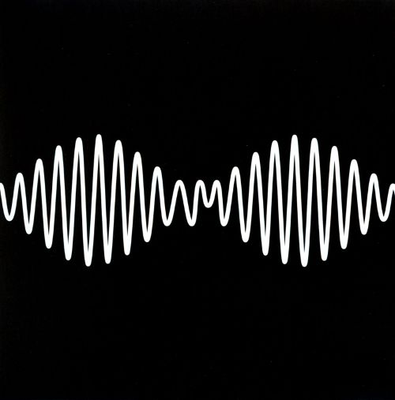

TITULOS POPULARES

AM
TRANQUILITY BASE HOTEL + CASINO

Whatever People Say I Am, That's What I'm Not
NUEVO ALBUM DISPONIBLE
Arctic Monkeys es una banda británica de rock, formada en Sheffield,
Reino
Unido. El grupo está
compuesto por el guitarrista principal y vocalista Alex Turner, el guitarrista Jamie Cook,
el
baterista
Matt Helders y el bajista Nick O'Malley. El bajista original de la banda, Andy Nicholson,
dejó
el
proyecto en 2006 poco después del lanzamiento del álbum debut.
Arctic Monkeys ha sido considerada como una de las primeras bandas en hacerse conocidas al
público
gracias a la difusión de sus canciones por Internet, por lo cual se los catalogó como «la
banda
que pudo
haber cambiado el mercado de la música». Esto le valió para que su álbum de estudio debut,
Whatever
People Say I Am, That's What I'm Not (2006), se convierta en el disco debut británico más
vendido en la
historia, con más de 300 mil copias vendidas en su primera semana en el mercado. Ganó el
premio
al
Mejor Álbum Británico en los Brit Awards 2007. El segundo álbum de la banda, Favourite Worst
Nightmare
(2007), contó casi con el mismo éxito, ganando también el premio al Mejor Álbum Británico en
los
Brit
Awards 2008. Luego pasarían a sacar Humbug (2009), un proyecto más experimental, y Suck It
and
See
(2011).